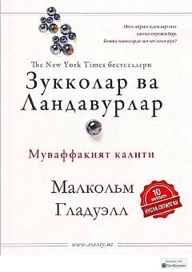

ZVMuvaffaqiyatga erishishning yashirin omillari va ijtimoiy muhit ta'siri haqida qiziqarli tadqiqot.
Ushbu kitob muvaffaqiyatga erishgan insonlarning hayot yo'li va ularning muvaffaqiyatiga ta'sir qiluvchi yashirin omillarni tahlil qiladi. Muallif Rozeto shaharchasi misolida ijtimoiy muhit va madaniy merosning inson taqdiriga qanday ta'sir ko'rsatishini ilmiy va qiziqarli faktlar asosida ochib beradi.